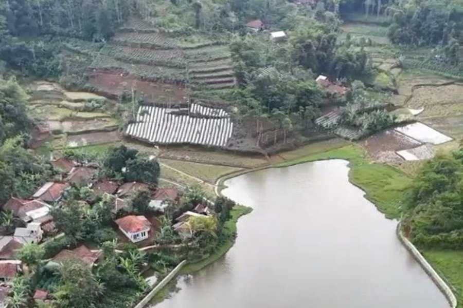
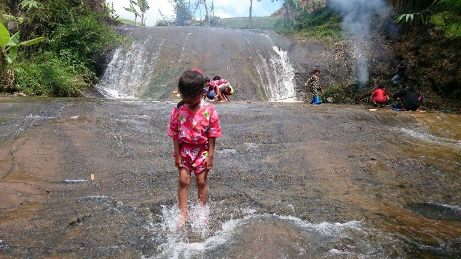
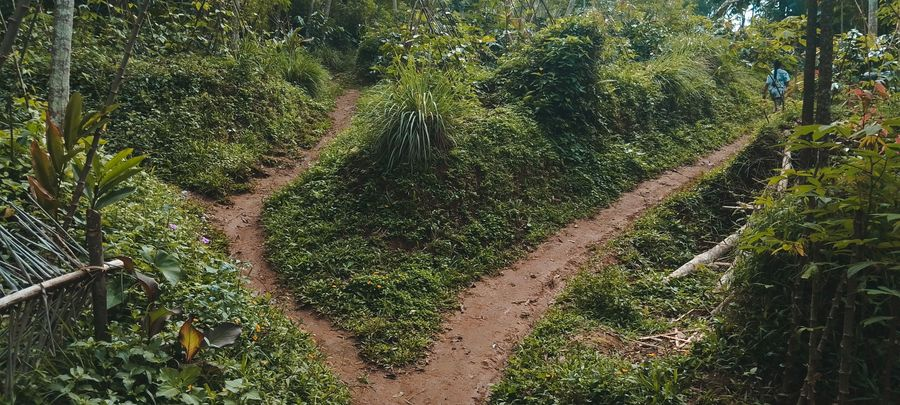
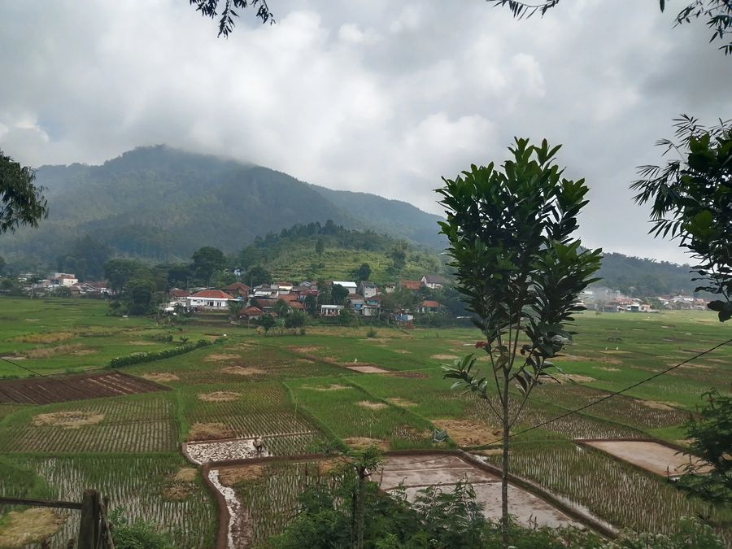
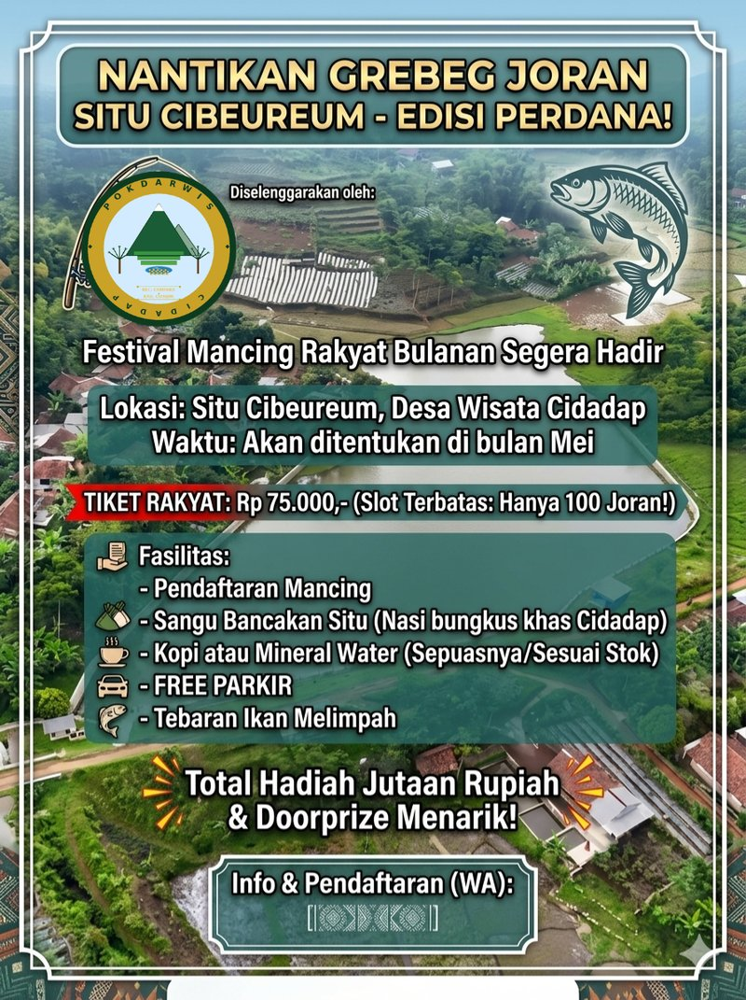
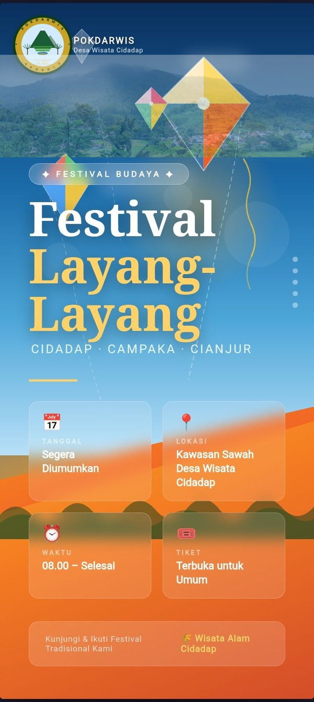
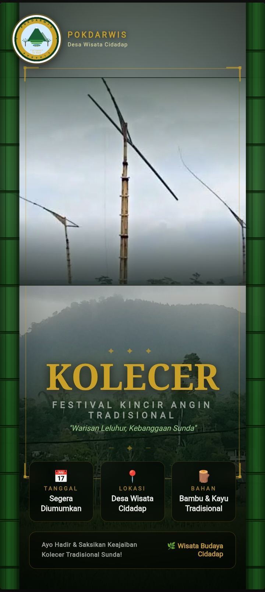

Desa Wisata Cidadap adalah destinasi wisata berbasis komunitas di Kecamatan Campaka, Kabupaten Cianjur, Jawa Barat. Dikelola oleh POKDARWIS Cidadap, kami menawarkan pengalaman wisata alam yang autentik — dari hamparan sawah hijau, kebun kopi Robusta, hutan tropis, hingga Situ Cibeureum yang indah.
Setiap kunjungan berkontribusi langsung pada kesejahteraan warga desa dan pelestarian alam Cidadap.
Tiga rute jalan kaki yang dirancang khusus menyusuri pesona Desa Wisata Cidadap — dari hamparan sawah, hutan bambu, kebun kopi, hingga Coffee Deck dan Situ Cibeureum. Mulai Rp 25.000/orang dengan pemandu lokal.
Zona Wisata
Empat Zona Unggulan

Zona Air
🎣 Situ Cibeureum
Danau alami dengan wisata mancing, saung tepi danau, rakit apung, dan pemandangan pegunungan yang memukau.

Zona Air
💧 Curug Badak
Air terjun alami dengan aktivitas tubing dan kano di sungai jernih yang menyegarkan.

Zona Agro
☕ Kebun Kopi & Agrowisata
Perkebunan Kopi Robusta, kebun sayuran organik, dan Coffee Deck langsung di tengah kebun kopi.

Zona Budaya
🏡 Perbukitan & Outbound
Jalur outbound, wisata budaya Sunda, permainan tradisional, dan panorama sawah dari perbukitan.
Paket Wisata
Pilih Paket Anda
🌾 Paket Walking Trail Dasar
Rp 25.000/orang
Trekking Rute 1 (Sawah & Jembatan)
Pemandu lokal bersertifikat
Air mineral
Briefing & orientasi jalur
☕ Paket Trail + Coffee Deck
Rp 35.000/orang
Trekking Rute 2 (Hutan & Kebun Kopi)
1 gelas kopi/teh pilihan di Coffee Deck
1 snack tradisional
Pemandu lokal
Edukasi perkebunan kopi
⛰️ Paket Full Experience
Rp 75.000/orang
Trekking Rute 3 (Perbukitan penuh)
Coffee Deck + makan siang desa
Wisata Situ Cibeureum
Naik rakit apung
Pemandu & dokumentasi foto
🎣 Paket Mancing Situ Cibeureum
Rp 50.000/orang
Akses area mancing 4 jam
Peralatan mancing
Saung & tempat duduk
1 minuman & snack
Yang Bisa Dilakukan
Aktivitas Wisata
🥾
Walking Trail
3 rute pilihan bersama pemandu lokal
☕
Coffee Deck
Ngopi di tengah kebun kopi asli
🎣
Mancing
Wisata pancing di Situ Cibeureum
🛶
Rakit Apung
Bersantai di atas rakit bambu
🌱
Edukasi Agro
Belajar bertani & petik kopi
📸
Foto & Konten
Spot foto instagramable alami
🍽️
Kuliner Desa
Masakan tradisional Sunda asli
🏠
Homestay
Menginap di rumah warga desa
Event Rutin
Agenda & Festival

🎣 Event Bulanan
Grebeg Joran Situ Cibeureum
📅 Setiap bulan · Situ Cibeureum

🪁 Festival
Festival Layang-Layang
📅 Tahunan · Padang Rumput Cidadap

🎡 Festival Budaya
Festival Kolecer
📅 Tahunan · Desa Cidadap
Hubungi Kami
Siap Berkunjung?
Reservasi & Informasi
Hubungi kami untuk pemesanan paket, informasi jalur walking trail, atau pertanyaan lainnya. Kami siap membantu!